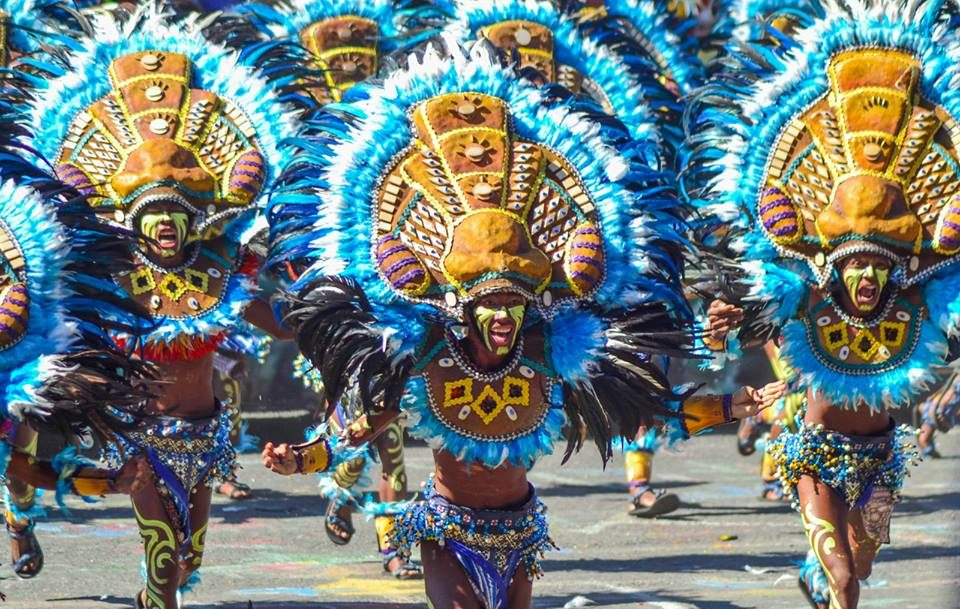
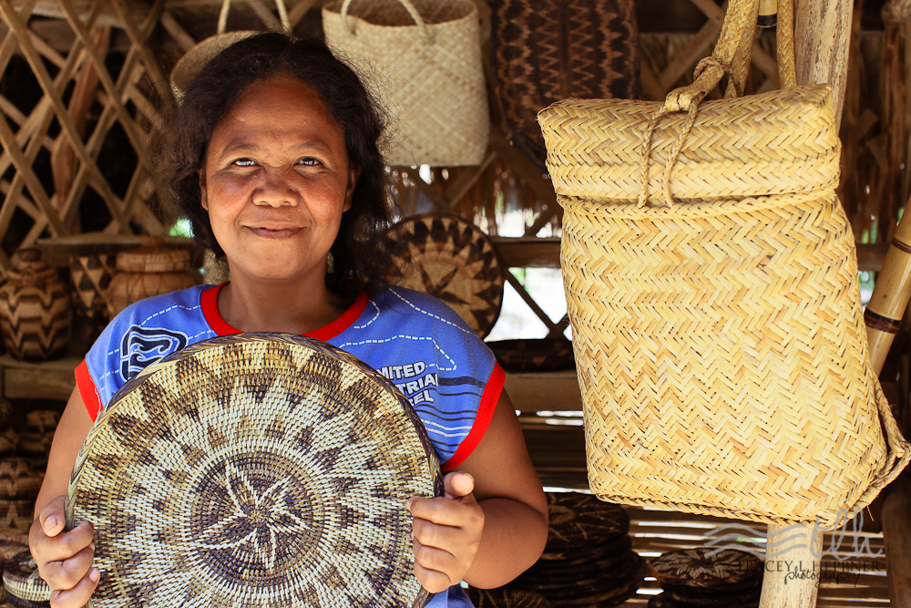
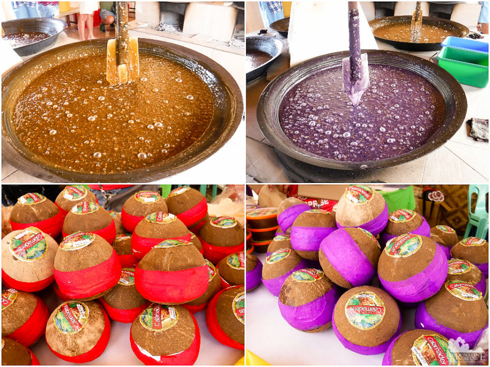
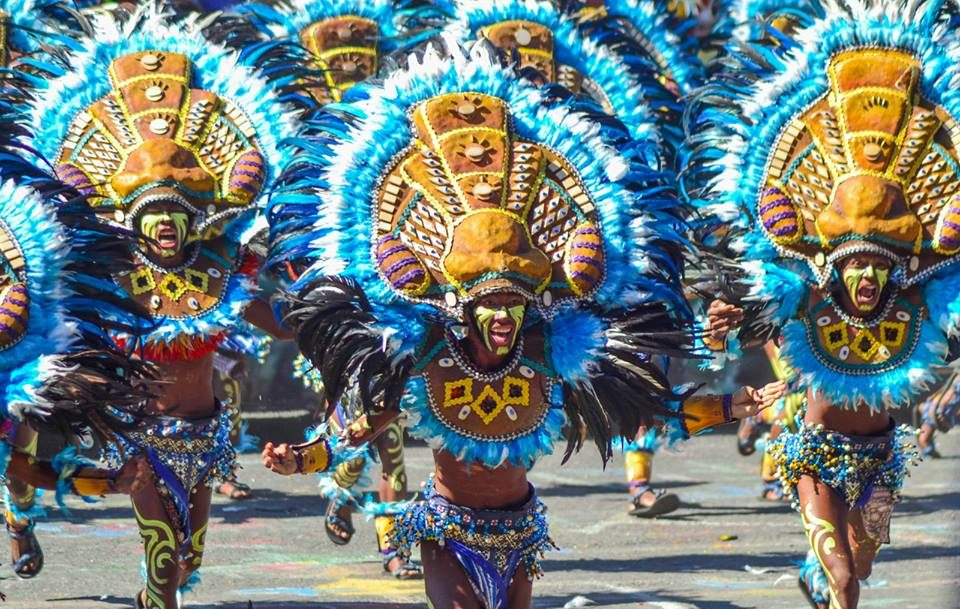
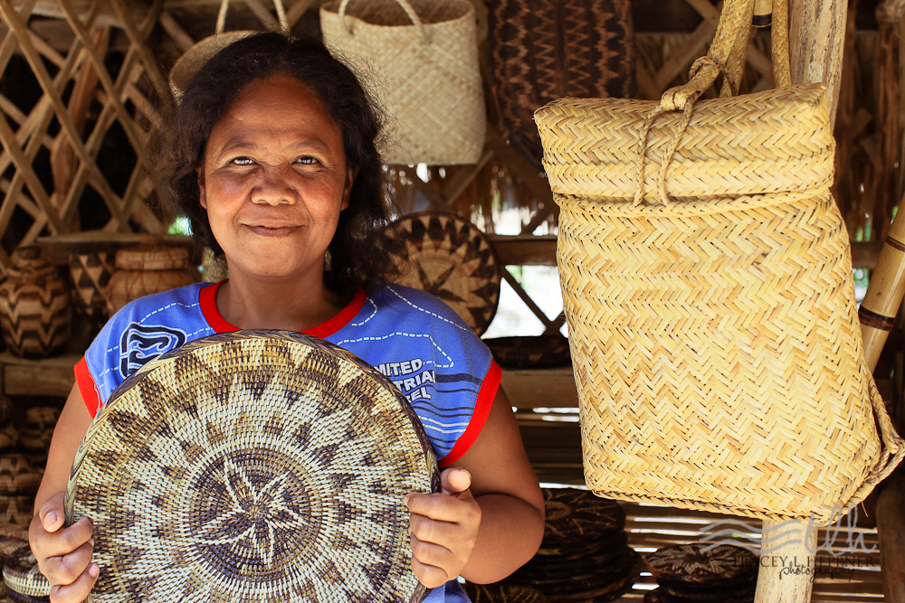
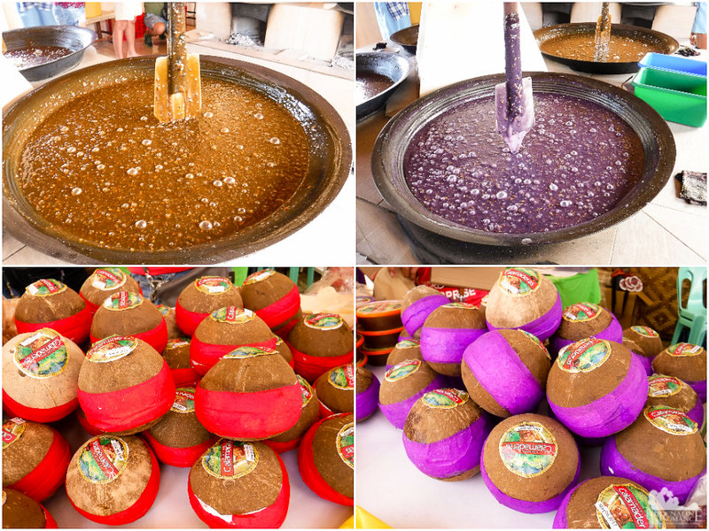

Brief History
MIMAROPA, formerly known as Region IV-B, is a region in the Philippines composed of the provinces of Occidental Mindoro, Oriental Mindoro, Marinduque, Romblon, and Palawan. The region's history dates back to pre-colonial times when indigenous tribes inhabited the islands, engaging in trade with neighboring regions.
During the Spanish colonial period, the area was explored and colonized, with forts and churches built to establish control. The region played a role in the Philippine Revolution and World War II, witnessing battles and resistance movements. Post-independence, MIMAROPA has evolved into a hub for tourism, agriculture, and natural resource management.
Today, MIMAROPA celebrates its diverse cultural heritage, blending indigenous traditions with colonial influences, making it a fascinating destination for history enthusiasts.
Cultural Highlights


 







Festivals
- Marinduque's Moriones Festival - A colorful reenactment of the legend of Longinus during Holy Week.
- Palawan's Pista'y Dayat - A sea festival celebrating the province's maritime heritage.
- Mindoro's Pinakbet Festival - Showcasing the region's famous vegetable dish.
- Romblon's Binirayan Festival - Honoring the town's founding anniversary with parades and dances.
Traditional Crafts & Foods
- Abaca weaving in Mindoro - Intricate baskets and mats made from abaca fibers.
- Calamay making in Romblon - A sweet coconut candy delicacy.
- Shellcraft in Palawan - Jewelry and ornaments from seashells.
- Pinakbet - A stew of mixed vegetables, a staple dish in the region.